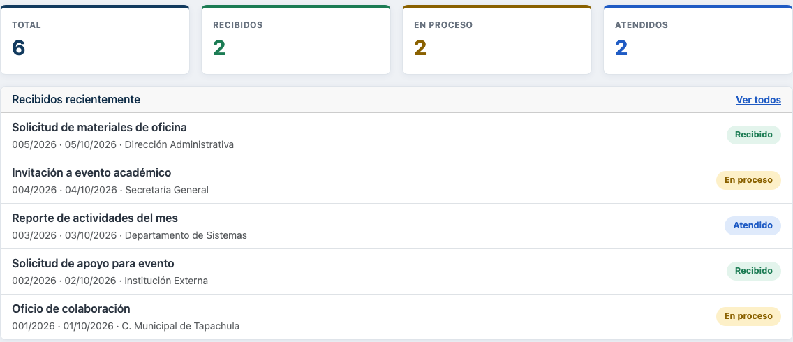
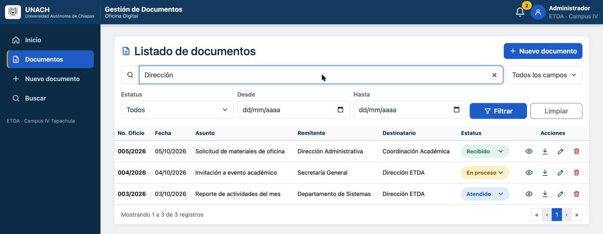
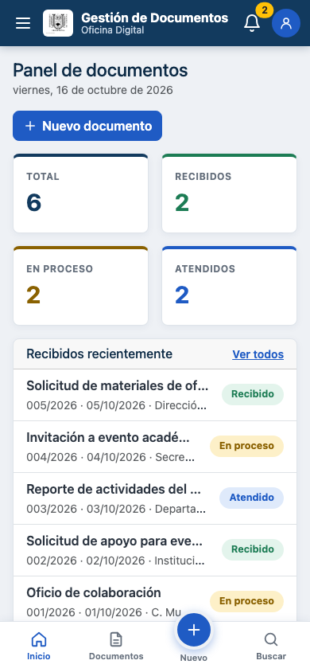
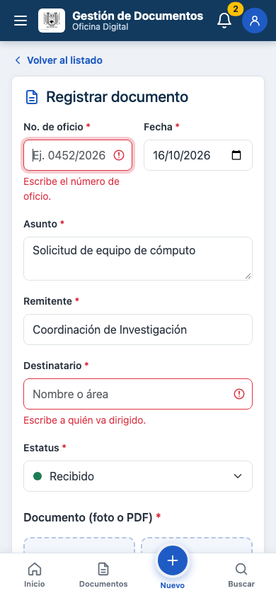
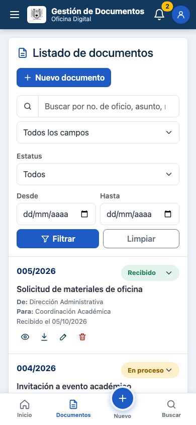
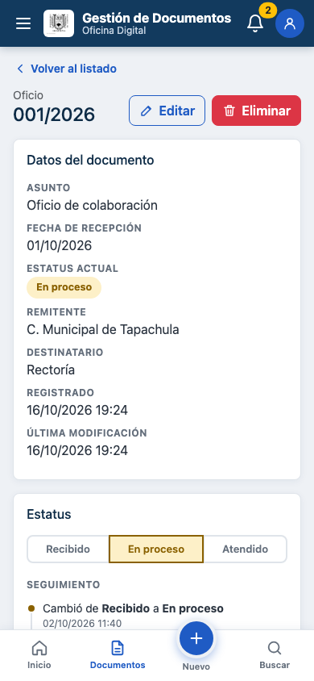
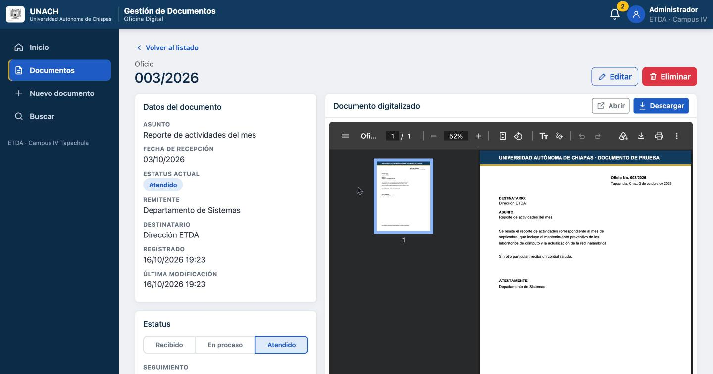

Escuela de Tecnologías Digitales Aplicadas · Campus IV Tapachula
Desarrollo de Aplicaciones Web y Móviles
Reporte de práctica
Sistema de Gestión de Documentos de una Oficina

Panel de documentos con el conteo por estatus y los oficios recibidos recientemente.
Alumno
Ezequiel Peña Mazariegos
Matrícula
100017097
Semestre y grupo
7.º semestre · Grupo A
Docente
Dr. Christian Mauricio Castillo Estrada
Dominio (Vercel)
https://gestion-documentos-unach-six.vercel.app
GitHub
https://github.com/Ezequielpm/portafolio-dawm
Tapachula, Chiapas · 16 de octubre de 2026
1. Problemática y objetivo
En una oficina se reciben a diario oficios, circulares, solicitudes e
invitaciones impresos. Gestionados solo en papel se traspapelan, se archivan en
la categoría equivocada y localizarlos por número de oficio, remitente o fecha
toma demasiado tiempo, lo que retrasa la atención de los asuntos.
El objetivo fue desarrollar una aplicación web responsiva que permita
recibir, digitalizar, registrar, buscar, actualizar el estatus y
consultar el PDF de cada documento, desde el celular o la computadora,
con Bootstrap, jQuery, PHP y MySQL, y publicarla en un dominio de Vercel.
Vercel no ejecuta PHP de forma nativa, así que vercel.json
asigna el runtime vercel-php a la carpeta api/. Además,
el disco de una función de Vercel se borra entre peticiones, por lo que los PDF
no se guardan en una carpeta sino en MySQL. Las credenciales no están en el
código: se leen de variables de entorno configuradas en Vercel, y las carpetas
internas (includes/, sql/) no se pueden descargar.
4. Base de datos
La base gestion_documentos contiene el modelo mínimo pedido
más dos tablas de apoyo:
Tabla
Contenido
documentos
id_documento (PK), no_oficio (UNIQUE), fecha, asunto, remitente, destinatario, estatus ENUM('Recibido','En proceso','Atendido'), archivo_pdf, creado_en, actualizado_en. Índices en fecha, (estatus, fecha), remitente y destinatario, que son los filtros del listado.
bitacora_estatus
Un renglón por cada cambio de estatus (anterior, nuevo y hora) para dar seguimiento. FK con ON DELETE CASCADE.
archivos_pdf
Contenido del PDF (MEDIUMBLOB) y su tamaño. Separada para que el listado no cargue archivos. FK con ON DELETE CASCADE.
El script sql/gestion_documentos.sql crea la base, las tablas,
los índices y seis documentos de prueba con su historial y sus PDF.
5. Funcionalidades
5.1 Panel, listado, búsqueda y filtros
El panel de inicio muestra el conteo por estatus; cada tarjeta abre el
listado ya filtrado. La campana de la barra superior avisa cuántos documentos
siguen como «Recibido». El listado busca mientras se escribe en todos los
campos o en uno (oficio, asunto, remitente, destinatario) y filtra por estatus
y rango de fechas, con paginación. Cada fila permite ver, descargar, editar y
eliminar; el estatus se cambia ahí mismo desde su insignia (figura 1).
5.2 Registro y digitalización
El formulario captura No. de oficio, fecha, asunto, remitente,
destinatario y estatus. El botón Tomar foto usa
capture="environment" para abrir la cámara trasera del celular;
Seleccionar archivo acepta un PDF o varias imágenes. El
navegador reduce cada foto a 2000 px con un <canvas> y el
servidor arma con ellas un PDF tamaño carta, una página por foto, escrito en
PHP puro (el formato PDF admite JPEG de forma nativa). Si se sube un PDF, el
servidor revisa su contenido real, no la extensión.
La validación se hace dos veces: en el navegador, con las clases
is-invalid e invalid-feedback de Bootstrap, para avisar
rápido; y en el servidor, que es la que cuenta: campos obligatorios,
longitudes, fecha real y no futura, oficio no repetido y tipo y tamaño del
archivo (4 MB como máximo, por el límite de Vercel). Las figuras 2 a 5 muestran estas pantallas en un celular.

Figura 1. Búsqueda «Dirección» en la versión publicada: 3 coincidencias por remitente o destinatario.

Figura 2. Inicio en celular (390 px).

Figura 3. Registro con validación.

Figura 4. Listado como tarjetas.

Figura 5. Detalle y cambio de estatus.
5.3 Estatus, seguimiento y PDF
En el detalle se cambia el estatus entre
Recibido, En proceso y Atendido; cada cambio queda en la
bitácora con su hora, dentro de una transacción. El PDF se consulta en un visor
dentro de la plataforma y se puede abrir en otra pestaña o descargar con el
nombre Oficio_003-2026.pdf. Solo se entrega por
api/pdf.php, que lo busca por el registro.

Figura 6. Detalle del oficio 003/2026 en la versión publicada: datos, estatus y visor del PDF.
5.4 Diseño responsivo
Con la rejilla y los breakpoints de Bootstrap, en celular la
navegación va en una barra inferior con el botón central «+», el menú lateral
se abre como offcanvas y el listado se muestra como tarjetas; desde
992 px el menú queda fijo a la izquierda y el listado es una tabla.
6. Seguridad aplicada
Sentencias preparadas de PDO en todas las consultas; los nombres de columna del buscador salen de una lista fija.
Todo texto que viene de la base se escapa antes de insertarlo en el HTML (evita XSS).
Las peticiones que modifican datos exigen el encabezado X-Requested-With (protección básica contra CSRF).
Credenciales en variables de entorno de Vercel; conexión a MySQL cifrada con TLS y certificado verificado.
Errores internos al log del servidor; al usuario solo le llega un mensaje general.
7. Pruebas
Se probaron sobre la versión publicada en Vercel con la base de Aiven y en una copia local con el mismo código:
Prueba
Resultado
Registro con 2 fotografías JPEG
PDF de 2 páginas generado y visible en el visor
Registro con un PDF
Se guarda y se descarga íntegro
Archivo de texto renombrado a .pdf
Rechazado: «no es un PDF válido»
No. de oficio repetido / fecha futura
Error marcado en el campo correspondiente
Búsqueda «Dirección» y filtro estatus + texto
3 y 1 coincidencias, respectivamente
Cambio de estatus Recibido → Atendido
Actualizado y registrado en el historial con la hora de México
Edición con un PDF nuevo
Reemplaza al anterior
Eliminación
Borra registro, historial y PDF; el PDF responde 404
POST sin X-Requested-With
403 «Petición no permitida»
includes/config.php, api/php.ini, sql/ desde el navegador
403 / 404: no se pueden descargar
Vistas a 390 px y 1440 px
Sin desbordamiento; tarjetas en celular, tabla en escritorio
8. Conclusiones
La aplicación cubre el flujo completo que pide la práctica
(recibir → digitalizar → registrar → buscar → actualizar estatus → consultar
PDF) y funciona igual en celular y en escritorio. Bootstrap aceleró la
construcción de una interfaz responsiva y consistente, mientras que jQuery y
una API en PHP mantuvieron separadas la presentación y la lógica del servidor.
Publicar en Vercel obligó a decisiones que en XAMPP no aparecen: los PDF se
guardaron en MySQL porque el disco del servidor no es permanente, las
credenciales pasaron a variables de entorno y la conexión a la base en la nube
se cifró. El resultado es un sistema que reduce el riesgo de extravío de los
documentos y permite localizarlos y darles seguimiento en segundos.